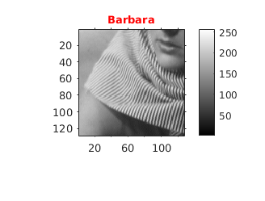
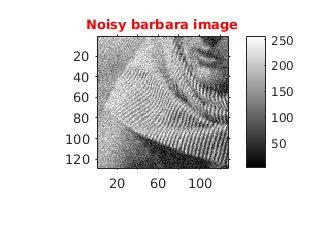
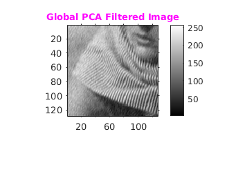
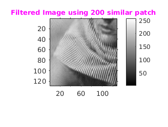

Assignment 5--6
CS-663 Group-163059009, 16305R011
Contents
PCA Based Denoising
Initialization
We have taken barbara-part.png image, which has size 128 by 128
file='../data/barbara256-part.png'; figure('name','Original Image'); img=imread(file);img=double(img); cmGray256=gray(256); imshow(img,colormap(cmGray256)),daspect([1,1,1]); title('\fontsize{10}{\color{red}Barbara}'),o1 = get(gca, 'Position'); colorbar(),set(gca, 'Position', o1),axis tight,axis on;
Adding Gaussian Noise to the image
Zero mean Gaussian noise of sigma=20 is added
rng(0,'twister'); noisyImg=img+randn(size(img)).*20; figure('name','noisy Image'); imshow(noisyImg,colormap(cmGray256)),daspect([1,1,1]); title('\fontsize{10}{\color{red}Noisy barbara image}'),o1 = get(gca, 'Position'); colorbar(),set(gca, 'Position', o1),axis tight,axis on;
a) PCA denoising algo
Implements PCA denoising algorithm by dividing entire image into overlapping patches of size 7 X 7. This is method is called as global PCA denoising. * Its has Mean Sq Error as 96.921905
tic patchSize=7;sigma=20; img1=myPCADenoising1(noisyImg,patchSize,sigma); figure('name','Filtered Image'); imshow(img1,colormap(cmGray256)),daspect([1,1,1]); title('\fontsize{10}{\color{magenta}Global PCA Filtered Image}'),o1 = get(gca, 'Position'); colorbar(),set(gca, 'Position', o1),axis tight,axis on; % Printing Global PCA Mean Sq Error meanSqError=sum(sum((img1-img).^2))/(size(img,1)*size(img,2)); fprintf('Global PCA Mean Sq Error:%f\n',meanSqError); toc pause(2);
Global PCA Mean Sq Error:96.921905 Elapsed time is 0.645272 seconds.
b) PCA denoising algo using L similar patch
In this part we collect 200 most similar patches from within a 31 x 31 neighbourhood centered at the top left corner of P(reference patch).
- Time taken with file barbara256.png(image of size 256 X 256)) appprox 208.76 sec.
- Time taken with file barbara256-part.png(image of size 128 X 256)) 62.602332 with Mean Sq Error as 62.602332 Paramters:
- Patch size 7
- Window size 31
- L 200
- sigma=20;
tic patchSize=7;windowSize=31;L=200;sigma=20; img2=myPCADenoising2(noisyImg,windowSize,patchSize,L,sigma); figure('name','Denoised Image uisng 200 similar Patch'); cmGray256=colormap(gray(256)); imshow(img2,cmGray256),daspect([1,1,1]); title('\fontsize{10}{\color{magenta}Filtered Image using 200 similar patch}'),o1 = get(gca, 'Position'); colorbar(),set(gca, 'Position', o1),axis tight,axis on; % Printing mean Square Error meanSqError=sum(sum((img2-img).^2))/(size(img,1)*size(img,2)); fprintf('Global PCA Mean Sq Error:%f\n',meanSqError); toc; pause(2);
Global PCA Mean Sq Error:62.602332 Elapsed time is 153.407573 seconds.
c) Bilateral Filtering
Its has Mean Sq Error as 170.335766
Difference in Results Of PCA denoising and Bilateral
Result obtained using PCA denoising algo using L similar patch outperforms the result with a bilateral filter. Mean square error obtained for bilateral filter is greater than mean square error obtained in both the previous two parts. With Bilateral filter lot of noise component can still be seen.
Difference between PCA based approach and bilateral filter
- PCA based approach for denoising is based on "non-local" principle combined with PCA where as bilateral filter is a purely local technique.
tic windowSize=31; sigmaSpace=2; sigmaIntensity=28; [img3,spaceMask]=myBilateralFiltering(noisyImg,windowSize,sigmaSpace,sigmaIntensity); figure('name','Denoised Image uisng Bilateral Filtering'); cmGray256=colormap(gray(256)); imshow(img3,cmGray256),daspect([1,1,1]); title('\fontsize{10}{\color{magenta}Filtered Image using Bilateral Filtering}'),o1 = get(gca, 'Position'); colorbar(),set(gca, 'Position', o1),axis tight,axis on; % Printing mean Square Error meanSqError=sum(sum((img3-img).^2))/(size(img,1)*size(img,2)); fprintf('\nMean Sq Error of the image:%f\n',meanSqError); toc; pause(2);
Mean Sq Error of the image:170.335766 Elapsed time is 1.117455 seconds.